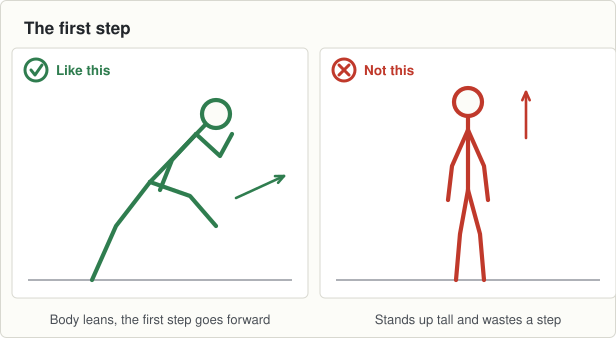

On the ground
- 12 cones, six lanes, 15 metres
- 25 discs beside the lanes
- Hurls down for now
Set it up before the first group arrives and leave it for all three.

0 to 2Wake up game: sprint to the nearest cone
- They jog inside the grid with their hands empty.
- Shout "cone". Every boy sprints to the nearest of the twelve cones, stops beside it, and jogs again.
- Five goes. Move yourself about so the nearest cone keeps changing.
2 to 8Movement: two starts
- Six lanes, four boys to a lane, one wave goes on every whistle.
- Standing start. "Feet apart, one foot in front, lean until you have to run."
- Rolling start. They jog five metres, and on the whistle they sprint the rest.
- Four waves of each. Nobody runs back down the middle of a lane.
8 to 13Body shape: the sit
- A disc each, an arm's length apart. Say each line out loud and let them copy you.
- 1. "Feet under your shoulders, toes pointing a bit out."
- 2. "Push your backside back and down, like you are sitting on a low stool."
- 3. "Chest up, heels flat on the ground."
- 4. "Hold. One, two, three, four, five." Then stand up.
- Ten of them, slowly. This is the shape of every start and every stop all year.

13 to 17Challenge game: standing race
- Pairs of roughly the same size, one pair to a lane, both in a standing start.
- On the whistle they race ten metres. Six races, a new partner each time.
- Nothing written down and no winners announced.
Coach one thing: The first step goes forward, not up.
- Boys who bounce upright before they run. They have wasted a step.
- Heels lifting in the sit. Move his feet a bit wider.
Lashing rain. Everything here works in the wet. Keep them off the ground.